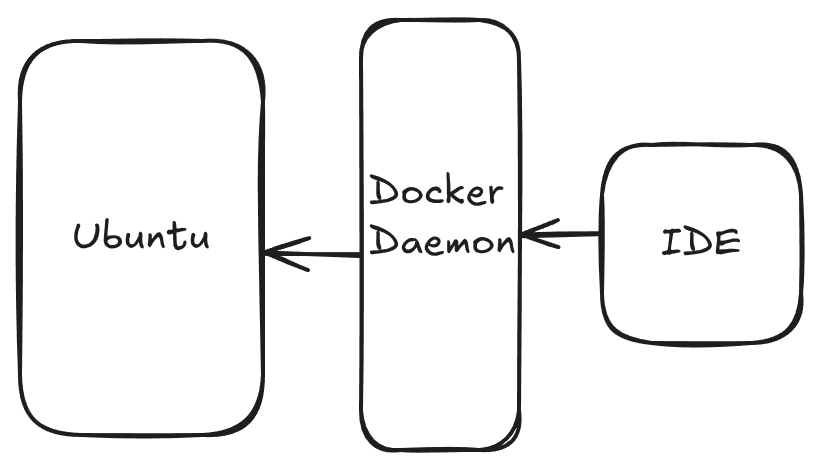

Tecnologias
Este sistema foi desenvolvido com recurso a tecnologias de software livre e de código aberto.
O servidor é uma máquina de Linux, que à data de escrita deste manual tem o Ubuntu 24.04.2 LTS (Noble) instalado. É recomendado adoptar releases LTS (Long Term Support) pela sua estabilidade, e também porque têm um suporte mais longo do que as versões Standard.
O servidor tem habilitado um servidor de SSH (Secure shell), que permite aceder de forma segura ao terminal e efectuar todas as operações descritas neste manual.
A Infra Estrutura de Dados (IDE) OGC API da DGT, de aqui em diante designada OGCAPI - DGT, está implementada utilizando máquinas virtuais (docker containers), que são orquestradas usando docker compose.
Docker é uma plataforma para desenvolver, empacotar e correr aplicações. O Docker permite descrever a "infraestrutura como código", e desta forma assegurar a reproducibilidade do sistema. Isso permite abstrair de uma infraestrutura específica, possibilitando a instalação em servidores de cloud ou nativos de diferentes provedores.

O docker compose é uma ferramenta que permite gerir aplicações que envolvem vários containers de docker. Os serviços, volumes e redes podem ser descritos num único ficheiro de configuração, e todo o sistema pode ser iniciado, reiniciado ou terminado com comandos simples. No próximo capítulo é descrita a arquitectura da IDE, que está definida nos ficheiros de configuração do docker compose.